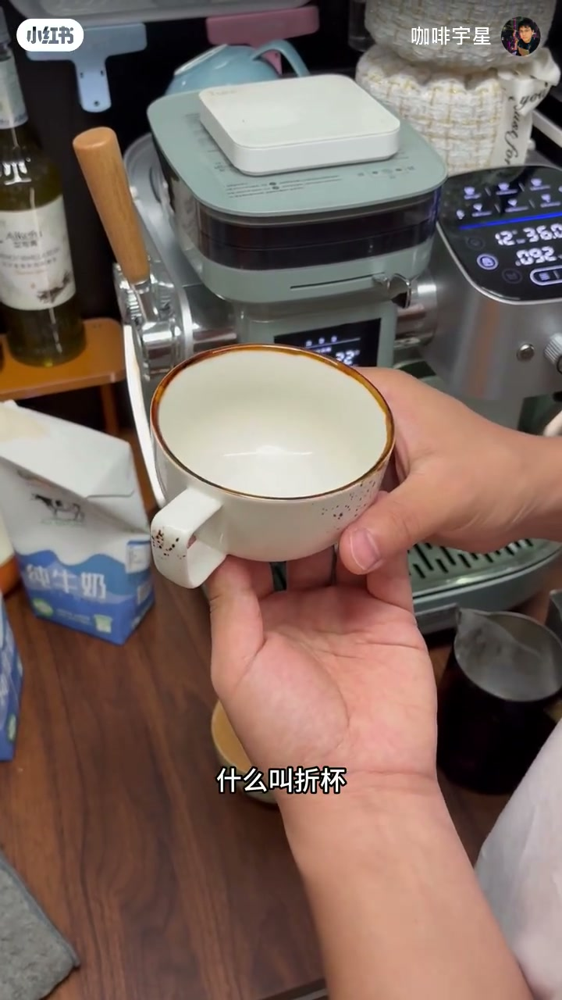
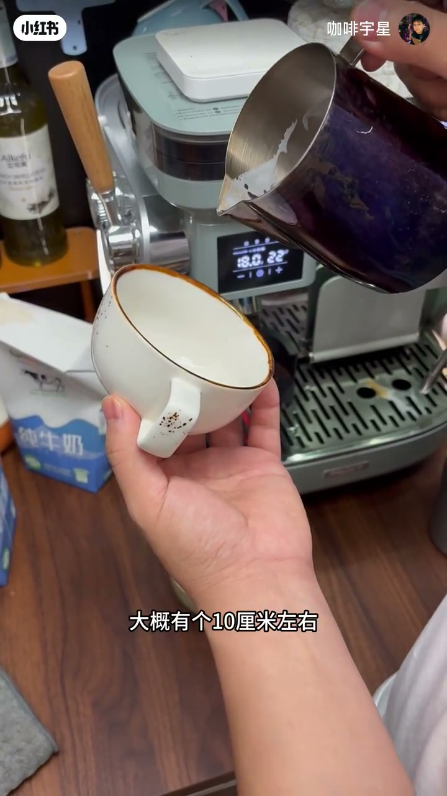
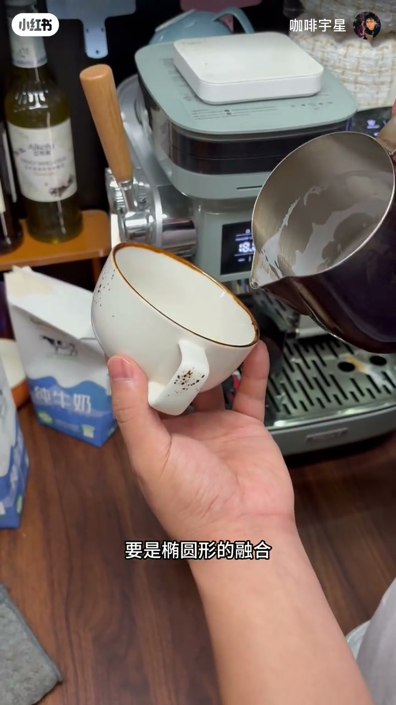
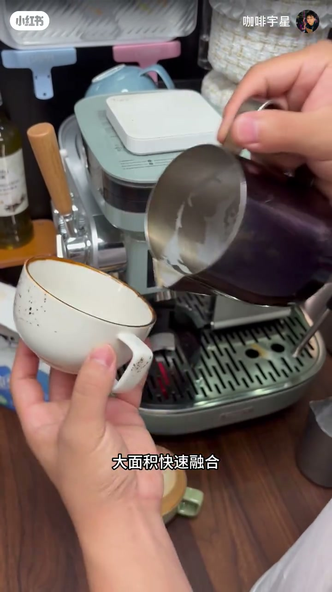

内容要点
咖啡拉花里最容易被忽略的一步——融合，决定了液面干不干净。UP 主咖啡宇星给出四个融合手法口诀：折杯融合（杯子微微倾斜让咖啡液面变深，倒奶时不容易翻滚）、高融合（杯与缸保持 5-10 厘米距离，避免白色奶纹）、椭圆形融合（避免圆形融合导致流量忽大忽小、牛奶浇杯底）、大面积快速融合（让液面流动起来、减缓奶泡分层）。四句口诀配合演示，是新手拉花液面干净的基础。
知识结构
平杯时咖啡液很薄，倒奶周边泛白；把杯子微微倾斜成折杯，咖啡液面变深，往下倒牛奶时不易剧烈翻滚。
杯与缸保持 5-10 厘米距离；太近融合时液面全是白色奶纹。融合要高融合，出图时才贴着面出纹路。
圆形融合流量忽大忽小（往前大、往回小），且牛奶会浇到杯底引起翻滚；椭圆形融合流量更稳、奶不会浇杯底。
小流量慢慢融合液面融合不开，拉花有毛边毛丝、味道不均匀；大面积快速融合让液面流动、减缓奶泡分层，拉花不会一坨。
液面干净的四句口诀：折杯融合、高融合、椭圆形融合、大面积快速融合。折杯让液面变深防翻滚，高距离避免白奶纹，椭圆形让流量稳定不浇杯底，大面积快速让液面流动起来并延缓奶泡分层。
00:00-00:38折杯融合：让液面先深下去，翻滚就少了
视频直接回答一个问题：「融合怎么才能让液面变得干净些？就像我这杯咖啡一样，干干净净的。」UP 主把方法拆成四个手法。
第一个是折杯融合：「我们这样平的拿杯子叫平杯，把杯子稍微折叠一下，这叫折杯。折杯融合的目的就是让里面的液体（咖啡液）变得稍微深一点，这样你往下倒牛奶融合的时候，液面不容易翻滚那么猛烈。」而平杯时咖啡液很薄，「你往下倒牛奶，周边全部都会泛白、泛牛奶，液面就不干净了。」

00:38-01:44高融合与椭圆形融合：距离和轨迹都要对
第二个手法是高融合：「杯子和缸子之间的距离稍微变高一点，大概 5 到 10 厘米都可以。别太近了，太近融合的话液面都是白色的奶纹。」UP 主强调一组对比：融合时要高融合，但「出图的时候，缸子要贴着杯面，纹路才能出来」——融合和出图的高度要求不同。
第三个手法是椭圆形融合：「千万不要圆形融合。如果你圆形融合，流量是忽大忽小、控制不住的——往前的时候流量会大，往回的时候流量会小，所有人都控制不住。」此外圆形融合牛奶会浇到杯子底上，「牛奶浇到杯底，液面就会翻滚」。椭圆形融合的目的有两个：让流量控制得更稳，以及牛奶不会浇到杯子底上。


01:44-02:28大面积快速融合：液面流动起来，奶泡不分层
第四个手法是大面积快速融合。UP 主指出很多同学的错误：「小小心心、慢慢地融合，那么你的液面就融合不开，拉花就会有毛边毛丝、不圆润，喝起来味道就不均匀。」
大面积快速融合有两个好处：「一，让你的液面流动起来、搅动起来；二，让你缸子里的牛奶和杯子的牛奶晃动起来，减缓奶泡分层速度，拉花就不会出现一坨。」最后他用四句话收口：「想让液面干净，四个融合的口诀——折杯融合、高融合、椭圆形的融合、大面积快速融合。」并让观众把口诀打在评论区、截图保存。

完整转录（56段）
以下文本由 Whisper medium 模型自动转录，可能存在少量识别误差，已尽可能修正。
好,那融合怎么才能让液面变得干净些呢?
就像我这杯咖啡一样,你看干干净净的,对吧?
那首先有四个手法
第一个就是
折杯融合
什么叫折杯?
我们这样平的拿杯子叫平杯
把杯子稍微折叠一下,这叫折杯
折杯融合的目的就是让你的里面的液体,也就是你的咖啡液
变得稍微深一点
这样你往下倒牛奶融合的时候,液面不容易翻滚那么猛烈
那如果你平杯的话
里面的咖啡液体是不是就会很薄,对吧
那么你往下倒牛奶,周边全部都会泛白,泛牛奶,对不对?那么液面就不干净了
好,那再一个就是融合的时候一定要是
高融合,什么是高融合
杯子和缸子之间的距离稍微变高一点,大概有个10厘米左右,5到10厘米啊,都可以
别太近了
你这样融合的话,液面都是白色的奶纹
大家要知道
我们融合的时候
要高融合,做出的时候,缸子要贴着面,是不是纹路才能出来,对不对?
所以说我们融合一定要是高融合,大概一个10厘米左右吧,10厘米左右啊
这样一个距离就可以了,液面就会干净一些
那还有就是融合一定要是
椭圆形的融合
这样子椭圆形的融合,看到了吗
千万不要圆形融合
如果你圆形融合,你的流量是忽大忽小,你控制不住的,比如说
往前的时候流量会大,往回的时候流量会小
对吧,所有人都控制不住的,所以说我们一定要椭圆形融合
还有一点就是圆形融合,你的牛奶会浇到杯子底上,对不对
那牛奶浇到杯子底上,液面就会翻滚
所以说一定要是椭圆形的融合
椭圆形融合的目的是什么,一
可以让你的流量控制的更稳,二牛奶不会浇到杯子底上
记好了,椭圆形
那第四个就是什么呢,要大面积快速的融合,这样子
大面积快速融合
很多同学这样
小心一一的慢慢的这样融合,那么你的液面就融合不开,拉花就会有毛边毛丝不圆润,喝起来味道就不均匀,对不对
一定要是
大面积快速融合
这样有两个好处,一就是让你的液面流动起来,搅动起来
二就是让你缸子里的牛奶
和杯子的牛奶晃动起来
减缓奶泡分成速度,拉花就不会出现一坨
所以说总结四句话就是
想让液面干净
四个融合的口诀
折杯融合
高融合
椭圆形的融合
大面积快速融合
记住吗
课带表可以打在评论区上,大家可以截个图,记住了,这四点